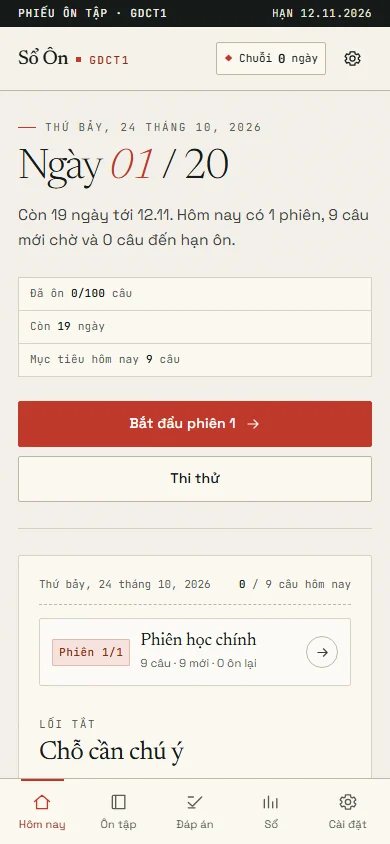
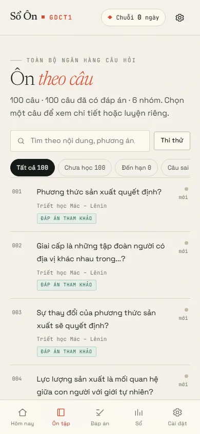
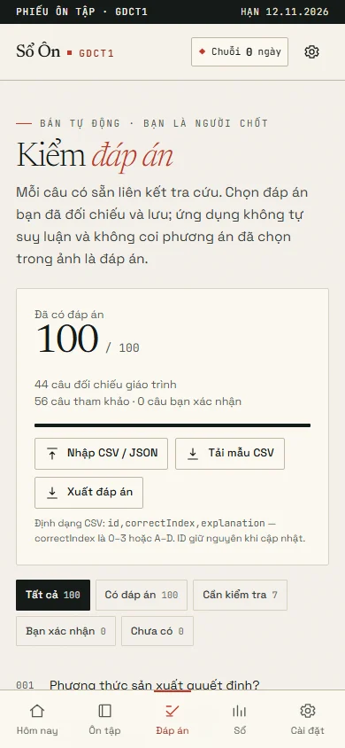

Ôn thi GDCT1 20 ngày tới 12.11.2026
20 ngày, 100 câu hỏi, một cuốn sổ.
Một phiên vừa sức mỗi ngày: câu mới, câu đến hạn và chỗ chốt đáp án. Chạy ngay trên trình duyệt, không tài khoản, không backend.

Vì sao
Đủ câu để ôn. Đủ nhẹ để mở mỗi ngày.
Không thêm một app học nữa. Một cuốn sổ chỉ mục cho đúng 100 câu cần ôn, xếp theo số ngày còn lại.
- Dữ liệu
-
100 câu từ 70 ảnh đề
Đã khử trùng, giữ id ổn định và chia thành 6 nhóm chủ đề. Tiến độ không lệch khi bạn quay lại.
- Lịch
-
20 ngày, tới 12.11.2026
Câu mới dồn vào 12 ngày đầu; 8 ngày còn lại dành cho ôn ngắt quãng. Lịch tự tính từ ngày bạn mở sổ.
- Nhịp
-
Phiên ngắn, chuỗi dài
Mục tiêu ngày và độ dài phiên chỉnh được trong Cài đặt. Câu sai và câu đánh dấu có lối tắt riêng để quay lại.
- Riêng tư
-
Không tài khoản, không backend
Tiến độ nằm trong localStorage của trình duyệt. Sau lần đầu, sổ vẫn mở khi mất mạng.
Đáp án
Biết câu nào đã chắc, câu nào còn phải kiểm.
Câu nào cũng có đáp án, nhưng không giả vờ mọi đáp án đều như nhau. Sổ ghi rõ nguồn của từng nhóm.
- Đối chiếu giáo trình
- 44
- Đã rà lại với giáo trình trước khi đưa vào sổ.
- Bản tham khảo
- 56
- Tổng hợp từ đề gốc; đọc lại phần giải thích khi ôn.
- Cần kiểm tra
- 7
- Đang được đánh dấu để bạn tự xác nhận, không mặc định là đúng.
Bạn có thể xem, sửa và xác nhận từng đáp án trong trang Kiểm đáp án. Mọi thay đổi lưu trên máy.
Cách học
Mở sổ. Ôn phiên hôm nay. Chốt lại.
Ba bước, lặp lại mỗi ngày. Không cần lập lại kế hoạch.
-
Mở sổ
Lần đầu mở, sổ tự xếp 20 ngày từ hôm nay tới 12.11 và chia câu mới theo từng ngày.
-
Ôn phiên hôm nay
Mỗi phiên trộn câu mới với câu đến hạn. Chọn xong mới thấy đáp án và giải thích.
-
Chốt lại
Xem câu sai, kiểm đáp án và giữ chuỗi. Hôm sau, sổ đưa lại câu đến hạn và câu mới theo lịch.
Trong sổ
Ba trang bạn sẽ mở nhiều nhất.
Ảnh chụp từ app thật, không phải mock.


Hỏi đáp
Vài điều nên biết trước khi mở.
Sổ có cần tài khoản hay mạng không?
Không. Không có đăng nhập, không backend. Sau lần mở đầu, app chạy offline; nếu cài lên màn hình chính, mở như một app.
Tiến độ của tôi được lưu ở đâu?
Trong localStorage của trình duyệt trên chính thiết bị này. Xoá dữ liệu trình duyệt hoặc đổi trình duyệt sẽ mất tiến độ; sổ không có bản sao trên mây.
Vì sao có câu ghi “Bản tham khảo”?
44 câu đã đối chiếu giáo trình; 56 câu còn lại là bản tham khảo từ đề gốc. 7 câu đang được đánh dấu “Cần kiểm tra” để bạn tự xác nhận.
Đáp án sai thì sửa thế nào?
Mở trang Kiểm đáp án, chọn câu và sửa. Đáp án bạn xác nhận được ưu tiên và lưu trên máy.
Sổ có thay thế giáo trình không?
Không. Đây là công cụ ôn tập cá nhân từ 70 ảnh đề đã tải lên; hãy đối chiếu với giáo trình và hướng dẫn chính thức của môn học.
Còn câu khác? Mở repo trên GitHub.
Bắt đầu
Ngày 01 bắt đầu từ một cú bấm.
Mở sổ, nhận lịch 20 ngày và phiên đầu tiên. Không cần đăng ký.